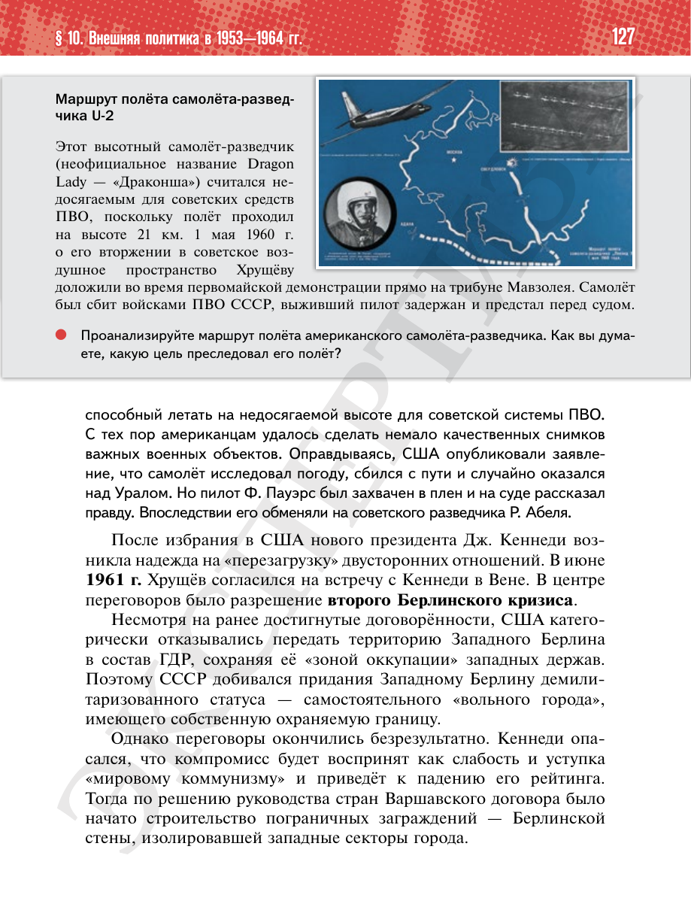

⌂
Мединский.нет
Последнее обновление: 30.08.2026
Мединский.нет
›
История России. 11 класс. Базовый уровень
›
Глава I. СССР в 1945—1991 гг.
›
§ 10. Внешняя политика в 1953—1964 гг.
›
стр. 128

← стр. 127
Оглавление
стр. 129 →
×